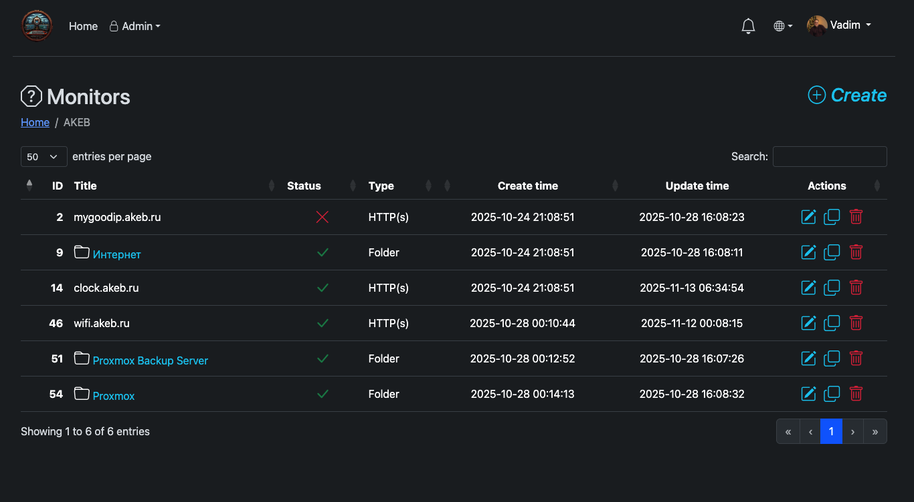
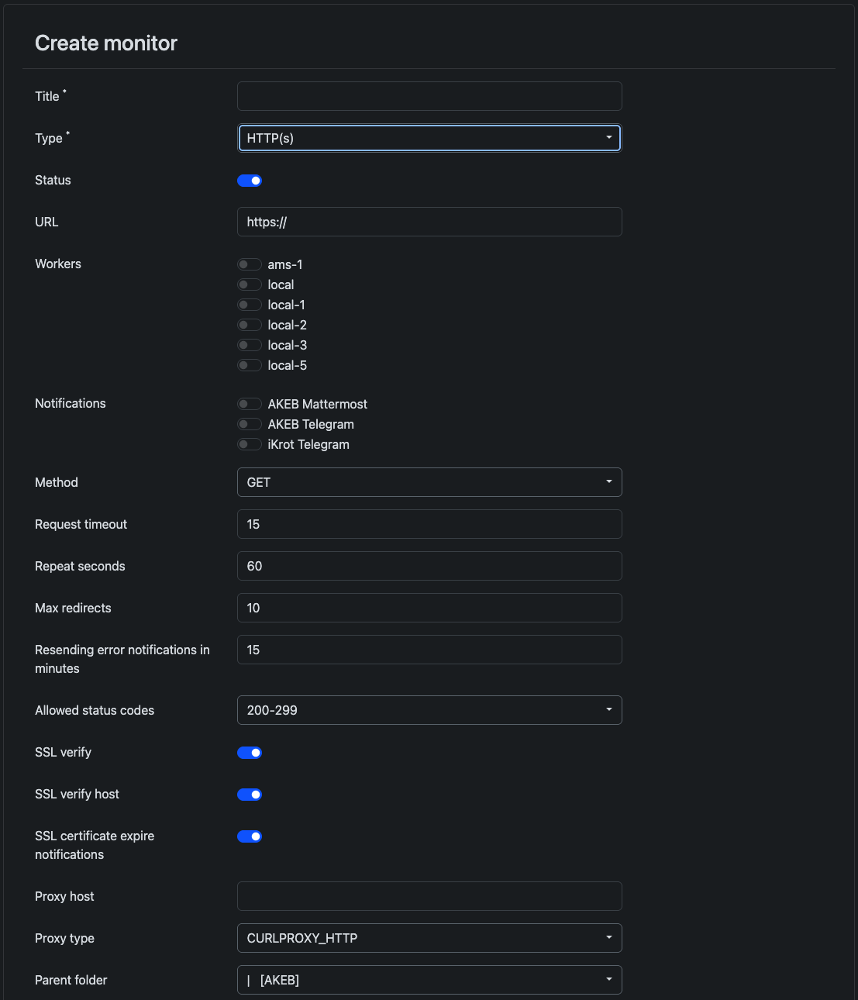

Мониторы
Мониторы — проверки (или папки), которые определяют, что смотрит система и как алертит.
Организация
- Папки — иерархия; ACL и maintenance наследуются вниз
- Включение/выключение; копирование в админке
- Назначение воркеров и каналов уведомлений
- Fail modes: any / majority (≥50%) / all
- Интервал, таймаут, повтор алерта; signatures;
api_enabledдля Status API
Типы проверок
| Тип | Назначение |
|---|---|
| HTTPS / HTTP | URL: коды, редиректы, заголовки, proxy, SSL verify. Опциональный response-заголовок Log для текста алерта |
| HTTP JSON | HTTP + json_path и ожидаемое значение; тот же заголовок Log |
| TCP | Доступность host:port |
| Ping | ICMP |
| Docker | Статус контейнера через Docker Engine API |
| External | Push через /api/external/{hash}/; заголовок Log или ?log= / ?message= |
| node-exporter disk/memory | Скрейп exporter с порогами % |
| Server offline | Возраст heartbeat агента |
| Server CPU / memory / disk / container | Пороги по метрикам агента |
| Server net RX / TX | Пороги Mbps |
Свой текст ошибки через Log
HTTPS, HTTP JSON и External могут передать понятное сообщение — в событиях и алертах оно видно как Log: ….
HTTPS / HTTP JSON (проверяемый ресурс → воркер)
Ответ проверяемого URL может содержать заголовок ровно Log. Воркер кладёт его в response_error (с префиксом Log: , очистка и обрезка). Если заголовок есть, он перекрывает другой текст ошибки этой проверки (в т.ч. сообщения HTTP JSON). Сервер сохраняет его в external_log при FAIL и использует в алертах.
HTTP/1.1 500 Internal Server Error
Log: upstream timeout on payment-apiExternal (callback → сервер)
На GET /api/external/{hash}/?status=ok|fail (для fail также error/down/0) текст передаётся с приоритетом:
- HTTP-заголовок запроса
Log - Query
?log=… - Query
?message=…(алиас)
# Заголовок
curl -H 'Log: disk full on backup' \
'https://monitoring.example.com/api/external/<64hex>/?status=fail'
# Параметр
curl 'https://monitoring.example.com/api/external/<64hex>/?status=fail&log=disk%20full'Без своего текста fail даёт сообщение вроде External status: fail. Последний log сохраняется для повторных heartbeat-алертов.


